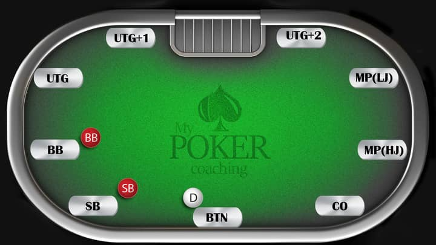
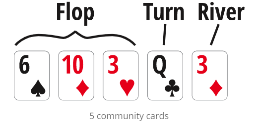

This is a basic tutorial for anyone who is interested to learn Texas Hold'em poker. The tutorial will introduce the game of Texas Hold'em poker in the following four steps:
Texas Hold'em is the world's most popular variant of poker game played in both live casinos and online. Popularity of the game surged in the 2000s due to exposures on TV, Internet, and in popular literatures. The simplicity of the game's rules, hand-ranking, and intense gameplays made it the most popular and well-known poker game around the world. The history background of Texas Hold'em can be found here.
The game uses a standard deck of 52 cards (without joker cards) and is often played on a table with 2 to 10 players. An illustration of the position names on a standard nine-handed table is shown below. The abbreviations stands for: Under The Guns (UTG, UTG+1, UTG+2), Middle Positions (Low Jack, High Jack), Cut Off (CO), Button (BTN), Small Blind (SB), Big Blind (BB).
Before each game starts, players at the SB and BB positons are forced to post certain amount of chips to initiate the betting. The amount the "blinds" can vary depending on the table stakes. Typically, the small blind is half the size of the big blind (e.g. in a $1/$2 Hold’em game the small blind is $1 and the big blind is $2). After each game finishes, all positions rotate clock-wise on the table so that each player gets to play on every positions.
The goal of a Texas Hold'em game is to use the two cards in your hand in combination with the community cards to make the best possible five-card poker hand (compared on a Hand-Ranking system), and to earn as many chips as possible from your oppnents. The game is consisted of five stages:
Preflop: during the preflop stage, each player is dealt with two private cards that can only be revealed by themselves. Next, players make actions one by one in a clock-wise order--starting from the UTG position all the way to the BB. Players can either call (bet chips equal to the previous player's bet; in this stage, the first player who calls needs a bet size equal to the big blind), fold (discard a hand and give up the current pot), raise (bet chips more than the big blind after all previous players are either called or folded), or re-raise (bet a even larger size compared to a previous raise).
Note: If a player raises the bet, each player must now call the new amount to continue playing the current hand, including those who may have already acted. If a player chooses to fold, the money already in the "Pot" from the prior "call" remains in the pot. If no player raises the big blind, then the player in BB position may check or raise. The round of betting stops when all players have either folded or called the last raise.
Flop: three cards are being dealt to the middle of the table (facing up). They are called the community cards as they can be seen by everyone on the table. Then a new betting round starts, from the SB position clock-wise to the BTN. In addition to call, fold, raise and re-raise, Players now have the options to check (without betting anything) and bet (any desired size larger than the big blind).
A player may check or bet only if the player is the first to act or all previous players have checked; if a previous player has bet, raise, or re-raised, the player may only choose to call, fold, or re-raise. the betting round ends when all players have folded or called the last bet or raise, or if all players have "checked".
Turn: One more community card is dealt to the table centre, followed by another betting round (same as the Flop).
River: The last community card is dealt to the table centre, followed by the final round of betting (same as the Flop).
In any of the previous stages (Preflop, Flop, Turn, River), if there is only one player remaining on the table (all other players are folded), the player wins the round and takes all the pot (all chips remain on the table) and no later stages will be proceeded; if more than one player remains after the last betting round, the next Showdown stage is proceeded.
Showdown: All players remaining on the table expose and compare their hands to determine the winner.
Each player has seven cards (the two private cards + the five community cards), and whichever five cards that make the best hand on the Hand-Ranking system becomes the player's hand. All remaining players' hands are compared and the hand with the highest rank on the Hand-Ranking system wins the game.
The Hand-Ranking system is not specifically a part of Texas hold'em rules, but apply to many different poker games. A hand always consist of five cards. Individual cards are "ranked" as follows (high-to-low): A, K, Q, J, 10, 9, 8, 7, 6, 5, 4, 3, 2.
Here are the "Rank of Hands" in the order of Strength from the highest to the lowest:
| Hand Name | Explaination | Example |
|---|---|---|
| Royale Flush | A, K, Q, J, 10, all in the same suit. | A♥ K♥ Q♥ J♥ 10♥ |
| Straight Flush | Five cards in a sequence, all in the same suit. | 8♣ 7♣ 6♣ 5♣ 4♣ |
| Four of a Kind | All four cards of the same rank. | Q♥ Q♦ Q♠ Q♣ 4♦ |
| Full house | Three of a kind with a pair. | 10♥ 10♦ 10♠ 9♣ 9♦ |
| Flush | Any five cards of the same suit, but not in a sequence. | 4♠ J♠ 8♠ 2♠ 9♠ |
| Straight | Five cards in a sequence, but not of the same suit. | 9♣ 8♦ 7♠ 6♦ 5♥ |
| Three of a kind | Three cards of the same rank. | 7♣ 7♦ 7♠ K♣ 5♦ |
| Two pair | Two different pairs. | 4♣ 4♠ 3♣ 3♦ Q♣ |
| Pair | Two cards of the same rank. | A♥ A♦ 8♣ 4♠ 7♥ |
| High Card | five unmatched cards; the highest card plays. | A♣ J♦ 10♣ 5♠ 2♥ |
Poker is a game of mathematics and using the ability to read situations and opponents to give you the advantage in each hand you play.
Though there are thousands of possibilities on every hand of Texas holdem, you can use the fact that everything is based on a set of 52 cards to predict outcomes and possibilities at every stage for every hand. Common uses of mathematics in poker can be found here.
Some strategy tips for beginners can be found here.